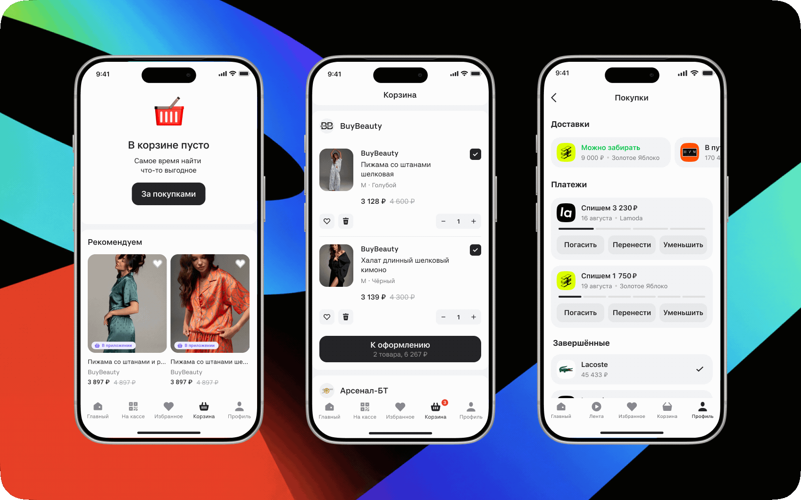
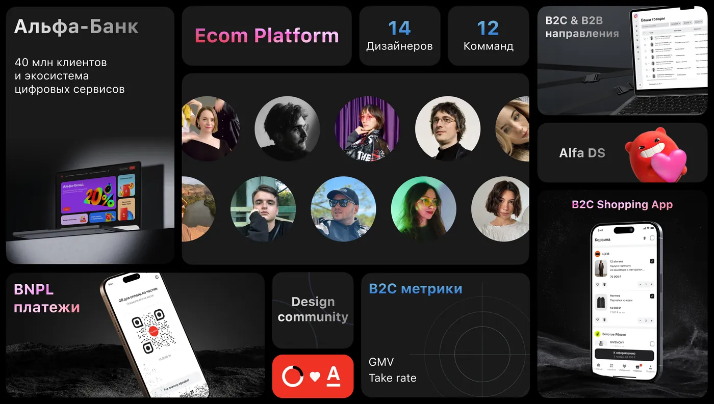
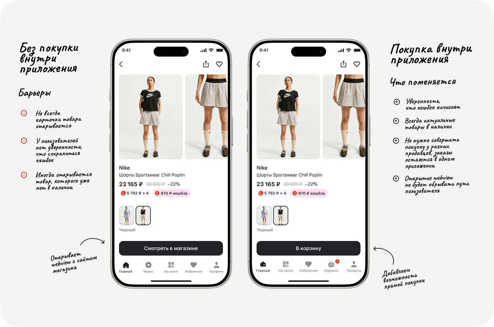
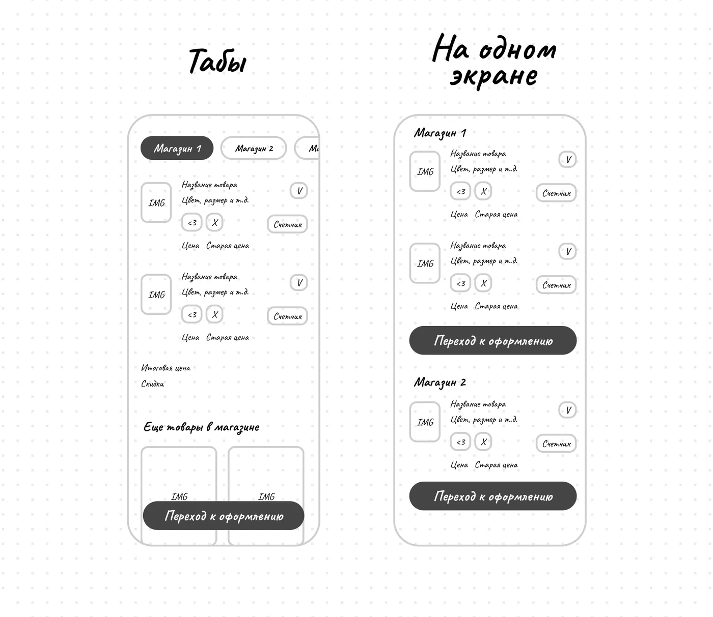
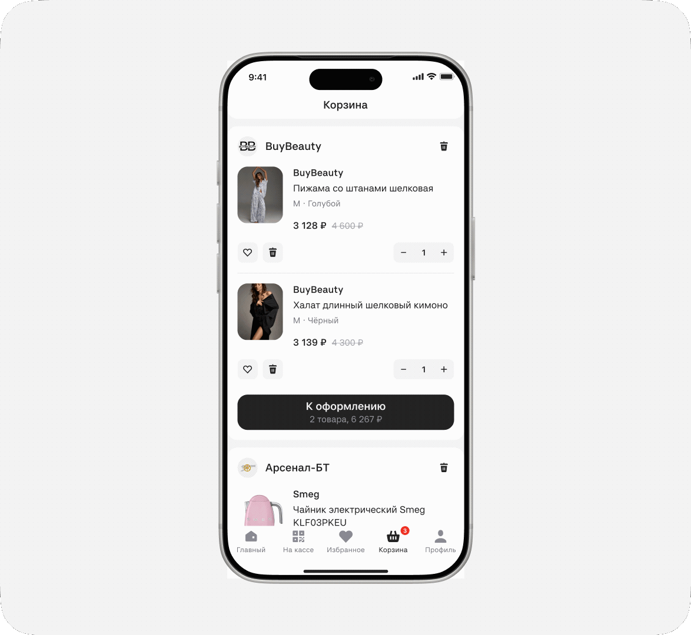
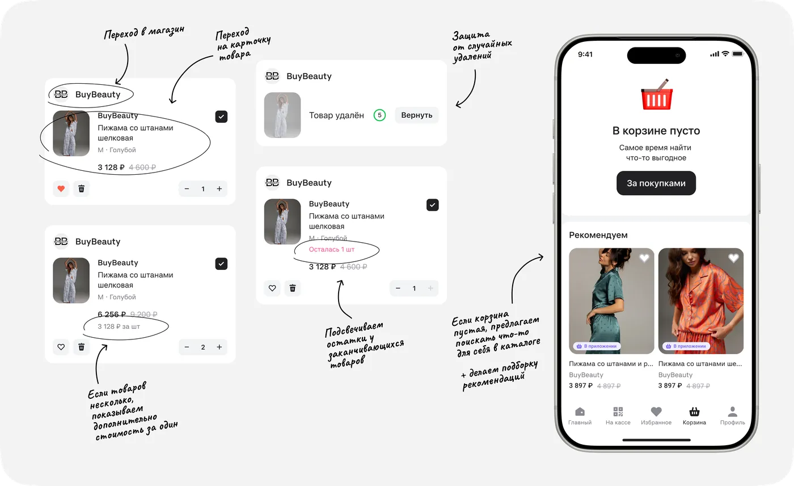
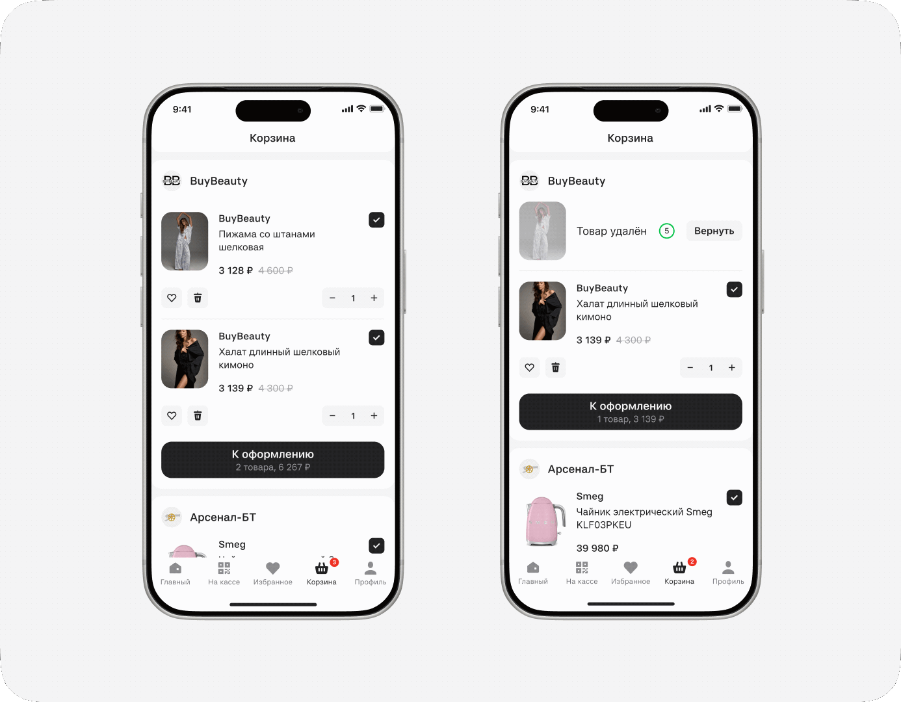
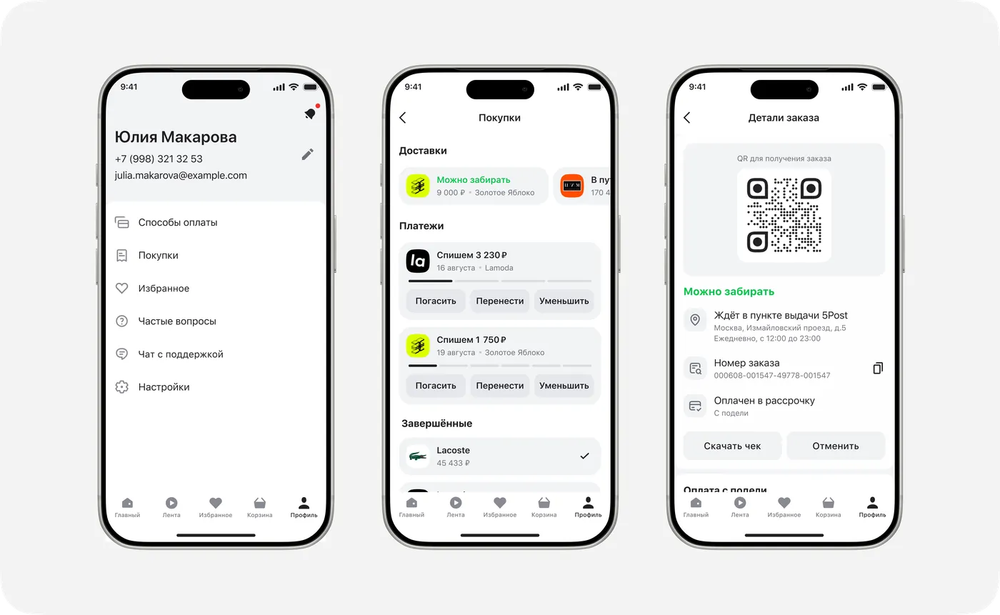
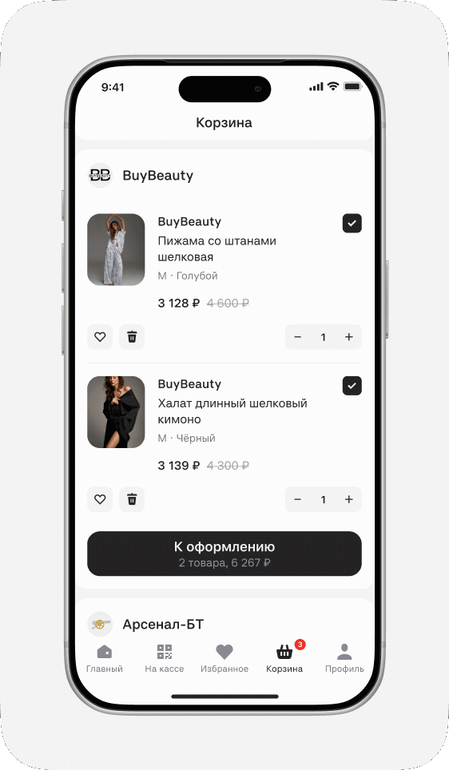

С нуля спроектировала сценарий покупки внутри приложения «Подели»: от добавления товаров разных продавцов в корзину до оформления и управления заказами.
С помощью CJM, конкурентного анализа и UX-тестирования нашла понятную структуру мультиселлерной корзины, учла техническое ограничение раздельного чекаута и подготовила MVP к запуску в двух каналах — «Подели» и приложении Альфа-Банка.

Новый сценарий позволил продукту перейти от clickout-модели к полноценному маркетплейсу с комиссией от завершённых заказов.
Начало
Июнь 2026
Запуск
Август 2026
Моя роль
Продуктовый дизайнер: discovery, JTBD, UX/UI-решения, прототипирование, подготовка и проведение UX-тестов, поддержка разработки и дизайн-ревью
Команда
Продакт корзины, продуктовый дизайнер, CPO B2C-направления, аналитики, разработчики и тестировщики
Скоуп
Приложение «Подели» для iOS и Android, а также WebView в приложении Альфа-Банка
Дизайн-система
Дизайн-система Альфа-Банка и собственные пресеты продукта
Метрики успешности
GMVGross Merchandise Value — общая стоимость товаров, проданных через маркетплейс
MAUMonthly Active Users — количество активных пользователей в месяц
Конверсияв добавление товара в корзину, начало оформления, завершённую покупку
Контекст
Альфа-Банк — крупнейший частный банк России, который развивает не только банковские продукты, но и собственную цифровую экосистему: платежи, рассрочку, путешествия и другие сервисы. Официальный сайт Альфа-Банка

В стратегии Альфа-Банка была цель занять место на рынке e-commerce, чтобы диверсифицировать источники дохода. Поскольку food-сегмент в экосистеме Альфа-Групп уже представлен X5 Group, новый маркетплейс сфокусировали на одежде, технике, косметике и товарах для дома.
🏢Про B2C и B2B направления
Банк подходил к решению комплексно. В 2025 году создано B2B-направление, целью которого была разработка решений для продавцов: управление крупными маркетплейсами Wildberries, Ozon, Lamoda и др. в одном кабинете; создание собственного интернет-магазина на сайте продавца.
Под эту экосистему создали независимый собственный маркетплейс — «Альфа-Маркет», который позволил бы продавцам избежать больших комиссий маркетплейсов при продаже товаров.
Business Challenge
В банке уже существовал продукт «Подели», работавший по модели clickout: пользователь находил товар в приложении, но завершал покупку на сайте партнёра.
Бизнес решил превратить «Подели» в полноценный маркетплейс и изменить модель монетизации — перейти от оплаты за переходы на сайты партнёров к комиссии с завершённых заказов. Маркетплейс также должен был стать доступен в WebView приложения Альфа-Банка.
Общее УТП двух каналов — возможность купить товар в рассрочку без переплаты и получить кешбэк по программе лояльности Альфа-Банка.
Для запуска покупки внутри приложения требовалось с нуля спроектировать сценарии оформления и управления заказами. Я отвечала за это направление.
Особенности пользователей
🛍️Аудитория «Подели»
Женщины 25–45 лет, регулярно покупающие на маркетплейсах. Аналитика выявила три сегмента: Shopper — 55% (выбирают и покупают товары), BNPL — 34% (управляют рассрочкой и платежами), Mixed — 11% (совмещают оба сценария). Корзина создавалась прежде всего для шопперов, но не должна была нарушать привычные BNPL-сценарии.
🏦Аудитория «Альфа-банка»
Уже была хорошо знакома с механикой кешбэка и ожидала прозрачных условий получения выгоды. В WebView мы делали акцент на скидке и возможности совершить выгодную покупку внутри привычного банковского приложения.
Ограничения
Чтобы сократить time to market, MVP и целевую версию я проектировала параллельно. Главное техническое ограничение на раннем этапе — товары разных продавцов нельзя было оформить одним заказом.
2. Решение задачи
Исследование до редизайна
🎙️Исследование на 11 респондентах
Провела интервью с 11 респондентами (6 человек 25–34 лет, 5 человек 35–45 лет), основной маркетплейс которых — Wildberries (5), Ozon (4) или Яндекс Маркет (2). Все регулярно покупают онлайн, живут в городах разного размера и не работают в Альфа-Банке.
Выявленные проблемы в приложении «Подели» с высоким приоритетом
⚠Неясный CTA на странице товара Кнопка «Смотреть в магазине» воспринималась как рекламная ссылка, а не как продолжение покупки. Пользователи ожидали увидеть на странице товара привычное действие — «Купить» или «В корзину» — поэтому переход к партнёру вызывал сомнения и прерывал сценарий. Это снижало конверсию в переход и увеличивало показатель отказов.
⚠Хрупкий переход к партнёру Перед переходом на сайт магазина пользователи боялись потерять выбранный товар, цену, вариант, кешбэк или возможность оплаты частями. Отсутствие уверенности в сохранении условий покупки приводит к отказу от перехода.
Решение

💼JTBD: когда я хочу что‑то купить на маркетплейсе, я хочу получить самые выгодные условия, чтобы чувствовать уверенность, что сделала правильный выбор.
✓
Для роста заказов, GMV и комиссионного дохода требовалась собственная корзина.
Это совпадало с целями Альфа-банка по созданию маркетплейса. Главным ограничением стало то, что товары разных продавцов нельзя было оформить одним заказом. Нужно было спроектировать мультиселлерную корзину, которая понятно разделяет покупки по магазинам и ведёт пользователя через несколько оформлений, не снижая конверсию.
CJM
На основе исследования, рекомендаций NN/g и технических ограничений я собрала целевой путь покупки.
CJM помогла рассмотреть корзину не как отдельный экран, а как связующий этап между выбором товара и оформлением заказов у разных продавцов. Карта систематизировала выявленные и потенциальные барьеры, которые предстояло учесть в дизайне и проверить во время UX-тестирования.
Анализ конкурентов
Чтобы сделать корзину интуитивно понятной, я изучила привычные пользователям паттерны маркетплейсов: Ozon, Wildberries, Яндекс Маркета, US Mall, ASOS, Lamoda, Самоката, Ленты, Золотого Яблока, Авито, Flowwow, AliExpress, Яндекс Еды и Shop от Shopify.
Я сравнила сценарии добавления товара, структуру корзины, переход к оформлению, работу без авторизации и пограничные случаи — например, достижение лимита товаров.
Базовые возможности у сервисов были схожими: изменение количества, удаление и перенос товара в избранное. Отдельно я искала примеры, в которых товары нельзя оформить одним заказом.
Подходящие сценарии нашлись в Яндекс Еде и Shop от Shopify. В Яндекс Еде заказы разделялись с помощью табов, а в Shop товары оставались на одном экране и оформлялись через отдельные основные кнопки для каждого продавца.
Варианты решений
Из-за технического ограничения товары каждого продавца оформлялись отдельным заказом. На этапе скетчей я проработала два варианта мультиселлерной корзины: в первом товары распределялись по табам магазинов, во втором — отображались на одной странице отдельными блоками с собственной кнопкой оформления для каждого продавца.

Оба подхода имели свои преимущества и риски, которые предстояло проверить на пользователях.
Вариант 1 — Табы
Товары каждого продавца находятся в отдельном табе. Пользователь переключается между магазинами и оформляет текущий заказ через одну основную кнопку.
✓Дополнительные продажи с блока рекомендаций товаров
✓Одна целевая кнопка для оформления
⚠При большом количестве продавцов навигация усложняется.
⚠Нет уверенности, что пользователь заметит табы
Вариант 2 — На одном экране

Товары сгруппированы в вертикальные блоки по продавцам. Для каждого магазина предусмотрена отдельная кнопка оформления.
✓Вся корзина доступна в одном списке
✓Отдельные CTA объясняют механику нескольких заказов
⚠Повторяющиеся кнопки могут создавать визуальный шум
⚠Нет рекомендаций товаров от магазинов
Исследование для выбора варианта
Мы провели модерируемое UX-тестирование двух вариантов мультиселлерной корзины. Участникам предлагалось собрать корзину и оформить заказ, а при переходе в неё в разной последовательности показывались две концепции: с табами продавцов и с размещением всех товаров на одной странице.
Мы наблюдали, насколько легко пользователи находят добавленные товары, изменяют их количество, понимают разделение по продавцам и переходят к оформлению заказа.
Главный результат: 100% участников сравнительного теста предпочли единый список с разделением по продавцам. Вариант с табами скрывал часть корзины и приводил к потере добавленных товаров.
отображение цены за единицу при изменении количества,
предупреждение о заканчивающихся товарах.
Для пустой корзины спроектировала продолжение сценария: пользователь может вернуться к покупкам или посмотреть персональные рекомендации. Так экран не становится тупиковой точкой и помогает снова перейти к выбору товаров.

Удаление товаров
Я проанализировала, как у конкурентов реализованы удаление товара и перенос в избранное. Для быстрых действий добавила свайп — привычный мобильный жест.
Чтобы пользователь мог исправить случайное удаление, я рассмотрела три решения:
Кнопка «Вернуть» с таймером сохраняет контекст удалённого товара и наглядно показывает, сколько времени осталось для отмены.
Снэкбар с действием «Отменить» не блокирует интерфейс, но сам паттерн часто ассоциируется с системными сообщениями и ошибками.
Модальное подтверждение предотвращает случайное удаление, но прерывает сценарий и требует дополнительного действия каждый раз.
В итоге я выбрала кнопку «Вернуть» с обратным отсчётом. Она не замедляет намеренное удаление, остаётся заметной в контексте товара и даёт пользователю предсказуемый способ исправить ошибку.

Покупки и платежи в одном разделе
Раньше в разделе «Покупки» отображались только заказы в рассрочку. С запуском маркетплейса мне нужно было добавить информацию о доставках и сохранить привычный сценарий контроля платежей.
Я рассматривала разделение на два пункта — «Заказы» и «Платежи», но это усложняло навигацию и разрывало привычный сценарий. Поэтому я объединила доставки и платежи внутри раздела «Покупки».
Доставки я разместила в горизонтальном скролле над платежами. Пользователь сразу видит статусы актуальных заказов, но они не перекрывают информацию о ближайших списаниях. В деталях заказа доступны QR-код для получения, адрес пункта выдачи, номер заказа, способ оплаты и необходимые действия.

4. Результаты после запуска

Влияние на бизнес-метрики
Сценарии покупки и управления заказами разработаны и запущены. Пока после запуска прошло недостаточно времени, чтобы накопить статистически значимый объём данных.
Ожидаемые результаты:
Сокращение пути и отказ от webview должны снизить потери после основного CTA.
💸Меньше потерь → выше конверсия → больше заказов → рост GMV → вместе с ростом take rate увеличивается доход.
Метрики, по которым собираем данные:
увеличение конверсии в добавление товара, начало оформления и завершённую покупку.
рост MAU;
рост GMV и комиссионного дохода;
Продолжаем собирать данные, чтобы оценить влияние нового сценария на активность пользователей и бизнес-показатели.
Key Learnings & Reflection
Что получилось
Нашла подходящую структуру корзины. UX-тестирование показало, что единый список понятнее табов: пользователи видят все товары и лучше понимают разделение по продавцам.
Учла реальное поведение пользователей. Поскольку корзина часто используется для хранения товаров, я добавила частичный выбор: пользователь может оформить нужные позиции и сохранить остальные.
Что осталось за рамками MVP
Единый чекаут для разных продавцов. Из-за технических ограничений каждый заказ оформлялся отдельно. Пользователи понимали эту механику, но воспринимали её как дополнительное неудобство.
Часть целевого сценария. Ради сокращения time to market в первую версию вошли ключевые функции, а остальные улучшения остались в бэклоге.
Что я возьму в следующие проекты
Проверять информационную архитектуру на реальном контенте: привычный паттерн может не подойти другому пользовательскому контексту.
Раньше синхронизироваться с разработкой по техническим ограничениям и сразу разделять MVP и целевой сценарий.
Следующие шаги
Объединить оформление товаров разных продавцов в единый чекаут.
Активнее рассказывать клиентам Альфа-Банка о преимуществах программы лояльности в маркетплейсе.
Оценивать влияние изменений на конверсию, повторные покупки, MAU, GMV и доход продукта.